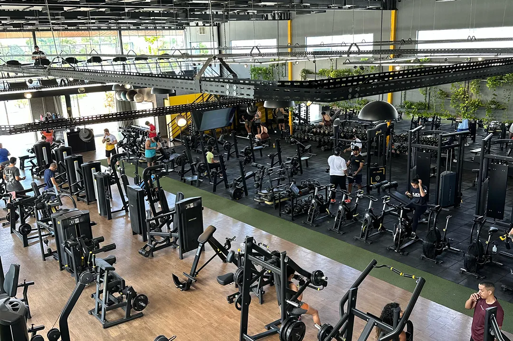

M7
FITNESS
CENTER
SAÚDE
BEM ESTAR
TECNOLOGIA
A M7 Fitness Center nasceu de um propósito claro: criar em Guanambi um espaço onde a busca por uma vida saudável fosse uma experiência completa, acolhedora e eficiente. Mais que uma academia, somos um centro de transformação que integra treino, saúde e bem-estar em um só lugar.
Nossa missão é cuidar de você por inteiro. Acreditamos que a verdadeira evolução acontece quando corpo e mente estão em equilíbrio. Por isso, oferecemos uma estrutura moderna com equipamentos de ponta e vamos além, disponibilizando o suporte de profissionais qualificados, como nutricionista e fisioterapeuta, para guiar sua jornada.
